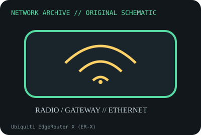

[ MODEL-SPECIFIC NETWORK HARDWARE ]
Ubiquiti EdgeRouter X (ER-X)
Compact wired router with five Gigabit ports and passive PoE pass-through/output capability. Confirm exact product label and revision before applying specifications.

IDENTIFICATION: Confirm manufacturer PID, hardware revision, device ID or module suffix. Nominal standards/link rates are not measurements of payload performance.
Exact specifications and compatibility
| Dedicated subcategory | Network appliances: routers, access points & switches |
|---|---|
| Exact product/model | Ubiquiti EdgeRouter X (ER-X) |
| Bus, ports and physical interface | Five 10/100/1000BASE-T RJ-45 ports; 24V passive PoE input and configurable pass-through/output subject to source/power budget. |
| PHY, radio or protocol | EdgeOS router/firewall platform; hardware offload and VLAN/routing features depend on configuration and firmware. |
| Nominal rate (not measured) | 1Gb/s per Ethernet port nominal; routed/NAT throughput depends on packet size, features and offload, with no test claimed here. |
| Measured throughput | No measured benchmark is claimed for a physical specimen. A valid result must record host/peer, link partner, media/cable, driver/firmware, traffic pattern, test tool and duration. |
| Drivers, OS and firmware | Ubiquiti EdgeOS firmware and CLI/web UI; firmware trains and support status are model-specific. |
| Compatibility | Verify 24V passive PoE electrical characteristics before connecting; it is not 802.3af/at output. Confirm supplied adapter and exact port role/configuration. |
| Variant warning | ER-X is not ER-X-SFP or EdgeRouter 4. Do not infer SFP port or standards-based PoE compatibility; exact board and firmware matter. |
Model and revision notes
ER-X is not ER-X-SFP or EdgeRouter 4. Do not infer SFP port or standards-based PoE compatibility; exact board and firmware matter.
Ubiquiti EdgeOS firmware and CLI/web UI; firmware trains and support status are model-specific.
Verify 24V passive PoE electrical characteristics before connecting; it is not 802.3af/at output. Confirm supplied adapter and exact port role/configuration.
Archival, ESD and preservation notes
Record model, PSU polarity/rating, firmware, port configuration and reset state. Unplug before service; preserve original supply separately.
Document source URL, access date, document revision and specimen label/condition. Preserve without credentials or private configuration.
Primary manufacturer and standards sources
- Ubiquiti EdgeRouter X technical specificationsPrimary manufacturer or standards documentation; verify exact SKU and host revision.
- Ubiquiti EdgeRouter support documentationPrimary manufacturer or standards documentation; verify exact SKU and host revision.
- IEEE 802.3 Ethernet standardsPrimary manufacturer or standards documentation; verify exact SKU and host revision.
Manufacturer statements cover the named part or its documented product family; the exact labeled revision and vendor compatibility list take precedence.